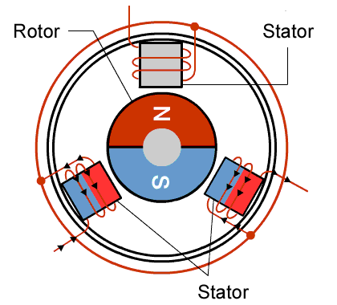

摩打種類
| 電源 | 種類 | 特點 | 用途 |
| DC | Brush DC Motor | G：成本低，設計簡單，容易控制 B：電刷及換向器容易磨耗，需要頻繁更換及定期維護 |
光碟托盤 |
| Brushless DC Motor (BLDC) | G：更小的磁鐵就能提供有刷摩打相同的扭力，低電氣雜訊，更高效率，更精準控制 | 洗衣機、冷氣、風扇和吸塵機 | |
| Stepper (STP) | 由脈衝驅動，每一個脈衝旋轉特定的步進 | 傳真機和印表機的進紙控制 | |
| AC | Induction Motor (IM) | ||
| Synchronous Motor (PM) | 旋轉頻率與供應的電流頻率相同 | 微波爐內的轉盤、風扇和洗衣機 |
有刷直流摩打

Brush DC Motor
● Coil - 線圈
● Rotor - 轉子
● Commutator - 換向器 (幫直流電換向)
● Brush - 電刷 (供應電能)
● Stator - 定子
無刷直流摩打
Brushless DC Motor